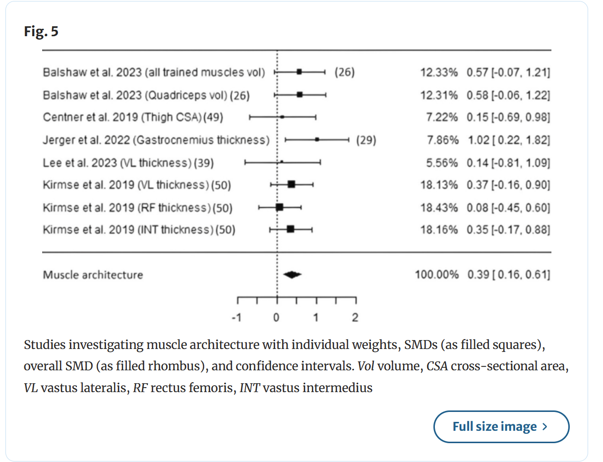
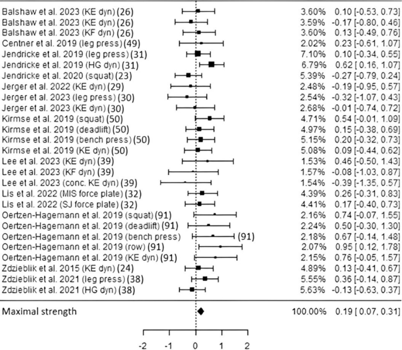
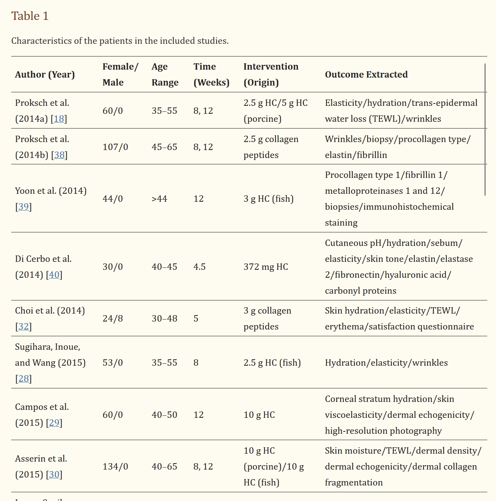
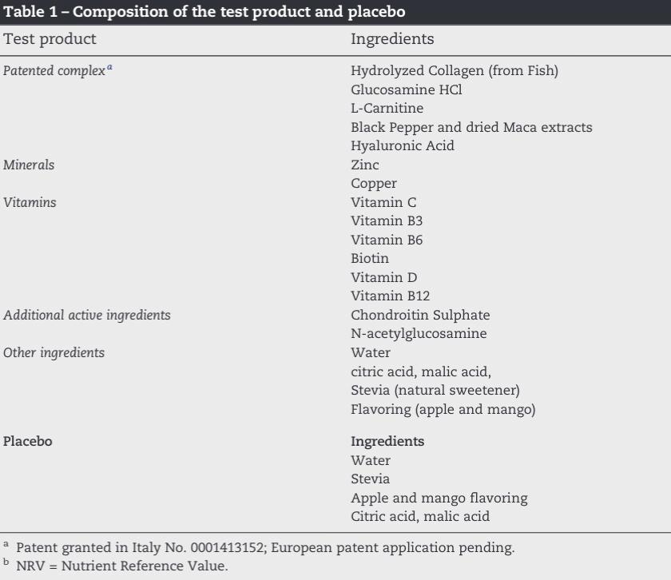
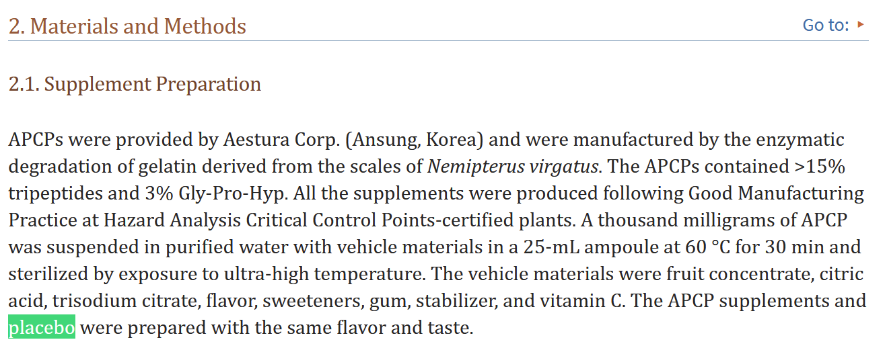
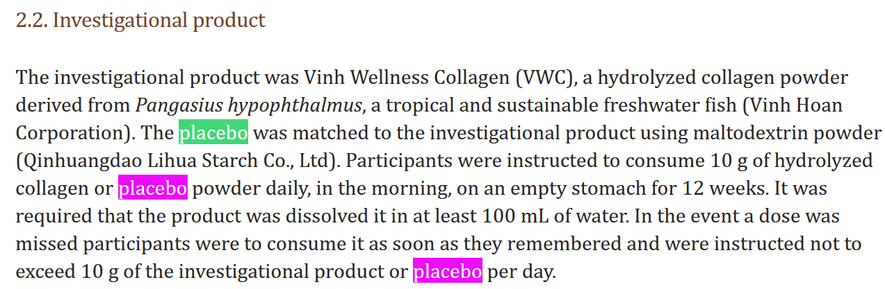

My Foray into the World of Collagen
I have to admit something.
Before doing the research for this article, I wasn’t expecting to dive into collagen much. It seemed like just another supplement raved about by random influencers online, which had the thick musk of “just another undertested fad with little outcome data”.
From joint health to skin health to basically everything in between involving a connective tissue, there were lots of claims being made. And like most noise on social media about supplements, I chose to ignore it.
Ultimately, when a couple of different doctors started recommending I consume it too, I was surprised it had made its way into the doctor’s office. So, I challenged them to show me evidence. And though I still felt quite indifferent towards the product, it pushed me just enough in the direction of me doing my own searching, since if I was able to give nuanced takes on collagen and share them with those clinicians, it could directly impact other patient care as well for the better.
And so the journey began.
Going in, I had a few important considerations for any trial evaluating collagen that I wanted to see fulfilled:
| Treatment | Control |
|---|---|
| Hydrolyzed Collagen | Isonitrogenic Placebo |
| Hyaluronic Acid | Hyaluronic Acid |
| Glucosamine | Glucosamine |
| Condroiton | Condroiton |
Where the only difference between treatment and control is the collagen supplement, but some standard of care treatment is included.
With those ground rules set, I’d like to present my synthesis on collagen’s outcome data for various endpoints. In no particular order I’ll be going over higher level meta analyses and systemic reviews and working my way down into commenting on individual trials cited in these reviews.
A look into the Systematic Reviews and Meta Analyses on Collagen
2024 Meta Analysis/Systematic Review looking at a variety of outcome
“Aims to investigate the effects of long-term daily collagen peptide (CP) supplementation on strength, musculotendinous adaptation, functional recovery, and body composition in healthy adults”.
Looked at outcomes measuring fat-free mass, tendon morphology, muscle mass, maximal strength, and recovery in reactive strength following exercise-induced muscle damage.
PRISMA chart shows 19 studies that were included with over 768 total participants
The meta analysis authors used Standardized Mean Difference as the outcome measure. I maintain that most meta analyses nowadays shouldn’t be using it unless they can give a clear definition of the underlying construct that they’re trying to measure. The definition of the estimand for the meta analyses, is what leads to clear definitions of the construct used for the SMD. it’s a vital part of the process that most meta analyses using SMD don’t seem to do for whatever reason. SMD has almost no proper use case for a meta analysis these days and should only be used by a very very very experienced practitioner
Why is the second criteria of the meta analyses inclusion criteria that “they used different forms of DC (dietary collagen)”? If they simply mean using a variety of collagen molecules but in similar proportions and dosages across studies, I have no problem. But I’m not sure based on the wording here.(To be fair, many of the trials stuck to 15g daily DC supplementation).
If I’m not mistaken, literally only one trial provided a protein matched placebo. Only ONE!!!!! The rest were some combination of maltodextrin, dextrose, or some random white powder that mixes similar to collagen in water.
They keep stacking people from the same study multiple times into the same forest plot. Wtf why??? Just make different subgroup analyses! THIS MAKES THE EFFECT MEASURE UNINTERPRETABLE. Not that SMD in this context wasn’t borderline uninterpretable from the start. Case in point:

- 
The literal definition of what not to do in a forest plot, right there. This entire paper is just best ignored at this point.
For fun, I tried to see if I can even replicate the above forest plot with the details they gave, but I decided it was too much effort when even the n they reported for the Oertzen study in the forest plot (91) didn’t match with the actual n reported.
Looked at a meta analysis of 6 studies with over 300 patients.
I wanted to note this letter because he succinctly commentates on some of the issues I’m observing with this literature.
To his point about financial biases: Unlike him, I want to note I personally don’t really care about who funded a study. As long as the results are analytically valid and study design is sound I have no problems who funded it, as they’d be valid independent of funding. Typically if there are nefarious things at play from the financial bias of the funders then they show up in study design, methods, and interpretations and you can criticize the study on the merit of those
He notes problems in this meta analysis around inconsistent dosage, effect sizes, possible publication bias,length of usage and actual clinical significance which are all very very fair criticisms and ones I agree with. This is unfortunately a theme we’ll see going throughout today…..
We do happen to have a couple of Systematic Reviews on the topic of supplementary collagen for cartilages, joints and muscles! Great!! Let’s read further…..
41 published studies were ultimately included in the review, 16 ofwhich were preclinical studies and 25 were clinical studies (including four systematic reviews/meta-analyses)
Oh dear god, these didn’t list baseline protein intakes of people in the study in the review (making me have to go through each trial to find if they did)
- Therefore I hate my life and these researchers I hate even more
At a glance, wildly varying doses of collagen, different molecular weights, whether it’s hydrolyzed, varying trial lengths. This is a red flag.
Also for some reason smaller studies seem to consistently show higher effect sizes than larger ones. This is also another red flag.
We’ll end up diving into some of the issues these individual studies had in the next section. The errors found in those trials are broadly representative of the problems most of these trials in this review have. I’ve definitely come to a different conclusion about collagen than these authors.
Only two studies had a placebo that matched total protein in the placebo. Again…..why would you do something like this?
And both of those that did have a comparable protein placebo they measured the surrogate outcome MPS, instead of hard outcomes like body composition or joint pain, cartilage size/thickness, etc. So there’s no real conclusion on hard outcomes to be made here.
Do I even want to bother with looking at the randomization + power analyses for both of these….I know I’m not going to be happy at a glance. Let’s spare myself the mental burden
Here’s a trial from the reviewe where it’s unclear whether the difference in VAS is clinically significant (< 10): https://cdnsciencepub.com/doi/10.1139/apnm-2016-0390
- Again, no assessment of baseline protein intake nor were the treatment and control protein matched. So………..we move on.
Effects of Oral Collagen on Skin Aging Parameters
This meta analysis seems to be the most commonly cited one for the benefits of oral collagen on skin aging outcomes. They meta analyzed 26 RCTs with 1721 patients for a variety of skin related outcomes, like Trans Epidermal Water Loss (TEWL), elasticity, hydration, wrinkles, dermal density, and many more.
Unlike the previous meta before, they did many more of the basic minimum things right compared to the metas I’ve cited earlier in this review. But there are still many basic errors to highlight here….
This is yet another meta analysis that used SMD improperly. They did have a meta analyst specialist on this meta, but still have to ding points for SMD especially if you don’t have to use it and can just convert to common units instead.
The forest plots at least do a good job of separating time points and other things into relevant subgroup analyses. (I can’t believe I have to offer such a basic point as legitimate praise)
Important to note that this meta was situated on trials that focused mainly in older woman between 35 - 60 years of age.
On the forest plot’s face value, it seems collagen is pretty consistently positively associated with most skin aging metrics here. That said when the metric is SMD it’s hard to interpret what the outcome even means. It gets worse….

- So many heterogeneous interventions with respect to dose and type of collagen. This further estranges how the SMD could be interpreted, and is a red flag.
This is also an example from one of the trials:

- On top of the standard criticism of not matching for protein in the placebo nor having any evaluation of baseline dietary protein intake…….The intervention isn’t even just collagen ALONE but a host of different things. How can we know the unique total protein independent content effect of collagen when you have all these other things?
Yet another study from this meta that didn’t protein match in the placebo nor give baseline protein intakes. They also didn’t use ANCOVA, or change scores even to analyze. Plus significance testing variables at baseline…..noobs 

- This meta keeps continuing tradition from the other top level reviews with the inclusion of a trial that didn’t use a protein controlled placebo or assessed protein intake at baseline. Which is sad because this trial did a better job of explaining their randomization protocols and power analysis better than most!! (only thing missing was explaining their minimum effect size clearly)
They did do subgroup analyses for the source of the collagen (what animal) and for supplementation length and different outcomes….but it’s hard to make super robust conclusions here. Especially given their lack of accounting for protein intake and placebo protein control. But if you had to make me flip a coin, I might lean slightly in favor of collagen being beneficial for skin aging markers. But barely so.
Overall if there’s a possible benefit to be had from collagen, the strongest evidence is in skin it seems. But there are still some fundamental issues with this meta that I’ve highlighted above that greatly diminish my confidence in the results for skin. I also think it’s responsible for me to admit that I’m not as equipped to evaluate inclusion criteria in these studies, as well as knowing what clinical significance is for a lot of these metrics. I’ll do best consulting a researcher that is more familiar with skin, and update this section.
A Closer Look at Individual Studies
Whey protein vs leucine matched collagen protein RCT
- This is a paper from the above muscle health meta, but SciHub doesn’t have access unfortunately :(. If I’m to believe just their results without looking at the methods then at least for muscle size whey protein does better than leucine matched collagen. Though I’m sure I’d have problems with this trial if I actually read it 😅
Skin Health + Elasticity with a (collagen + hyaluronic acid +other molecules) supplement l
120 participants randomized between each group, randomization method most likely simple given the website tool cited even though they said they randomized the patients “on the basis of the following characteristics: age, sex, BMI, ethnic background (mainly Caucasian),smoking habits, alcohol intake, nutritional level, and skin type assessed using Fitzpatrick scale”. Which… would imply stratified sampling???? But the randomization website tool they used didn’t allow for stratified sampling lol this is a red flag for the competence of these researchers
Everyone was blinded till end of study
Not clear they powered for their what was most likely post-hoc subgroup comparisons of older adults for joints. they took like 18 out of 34 people in the older age group who scored high on a joint pain assessment and looked at their outcomes. Common mistake here
No assessment for protein intake at baseline nor a protein matched placebo
ye bhagavan why do I even bother
Literally nothing on power analysis (big big red flag)
No assessment of baseline protein intake, AGAIN. It’s like they’re all trying to prove me right with how incompetent they are.
Same bullshit that didn’t assess collagen by itself but with Hyaluronic Acid and Chondroitin in conjunction compared to a placebo with nothing in it (not protein matched)
Let’s move on this trial is a waste of my time and headspace already there’s nothing of value here
Proper description of some aspects of their power analysis (*victory dance*)
Some aspects of randomization described (*victory dance*)
Higher sample size than others which is always nice
They used change scores instead of using the standard ANCOVA and adjusting for baseline, which is generally the best statistical approach for this (so get dinged slightly some points for that)
Did a subgroup for high meat intake to account for effects in people with higher dietary collagen (over 1549 grams of meat per week versus under 1549 grams of meat per week, which if we assume is lean ground beef 1549 grams averaged over the week amounts to around ~55g protein per day and somewhere between 5-20g collagen per day)
Why do these people keep dichotomizing continuous variables on the median I beg you clinicians please stop dichotomizing continuous variables in your research you’re throwing valuable information and variance away for no good reason. There are ways to make use of the information kept when it remains continuous so that it remains informative!!!
The higher meat intake group is supposed to measure dietary collagen intake and how much that contributes to the outcome, but that will also track with total protein intake for obvious reasons
If this is the best study I’ve found I don’t have much faith in humanity anymore
Is the following difference for VAS even clinically significant? Look how attenuated the difference is with the higher meat group
Another Chinese study looking at collagen hydrosalate
Power Analysis consists of this sentence:
“This effect size assures, at a significance level of a=0.05, a power of 90% for WOMAC score, and of more than 80% for Lysholm score”. Without sharing what “this effect size” meant.Who’s the genius that came up with this masterful power analysis????? (I hope the sarcasm is dripping through)
Seriously again these researchers are a joke and deserve to be publicly stoned (obviously I’m kidding don’t report me)
Once again…..didn’t assess baseline protein intake nor is the placebo protein matched. Another completely fatal flaw.
My Final Conclusions on the Topic
Yes, glancing at these other trials, I’ve lost pretty much all faith that most, if any, of these can be redeemed. I need them to assess for baseline protein intake and have the placebo total protein matched AT A MINIMUM but I have only encountered like 2-3 that did that, and 2 of them assess MPS only (lol) and the last one I could not get access to (also it’s an incredibly small study). Thus almost none of them are equipped to interpret collagen’s effect on the body, independent of its protein content. I think I’m done here, skimming over the characteristics of these trials in the systematic review as well as from searches I don’t think I can find a single one that’s redeemable.
Update: My friend has informed me that there’s actually some decent evidence for isolated glycine (one of the primary amino acid constituents of collagen, along with proline and isoproline) for various endpoints. I’ll let him fetch some evidence on that and that could maybe offer any unique benefits of collagen if they are to be had for far cheaper. We shall see.
Given tihs, at present, it’s not clear collagen is good for much beyond the protein content (except for maybe skin aging if you’re a older woman with skin aging?), and I’d just recommend getting enough protein (daily 1.2 g protein/kg lean body mass, if being conservative up to 1.6g/kg daily for older adults). Getting the total protein intake to at least 1g/kg lean mass is pretty broadly important for overall health.
If you find 1.2g/kg hard, protein supplements are an excellent way to get up to that number, and using plain soy protein isolate for example is much more versatile than people think. Protein rich legumes like soy and lupini beans are great. Soy itself is very versatile as high protein options like tofu, tempeh, and TVP exist. Seitan is a real showstopper as well, since the protein to calorie ratio is off the charts and it is usually quite cheap to buy and store in bulk. There are lots of creative ways to up protein intake, and really going from 0.6 g/kg protein to 1g/kg protein goes such a long way. Don’t stress out over going above and beyond in protein intake if it’s causing stress and is leading to a less palatable diet. You’ve done most of the work by getting to 1g protein/kg lean mass.
I do think it is unfortunate that we have to worry about getting this much protein in the first place. It is a stroke of bad luck, and if humans needed like half the protein intake to capitalize on muscle, bone, skin and joint health, our collective lives would be so much easier. But, alas the overall outcome data on protein paints a different picture than I would like, and I plan to be honest with everyone else.